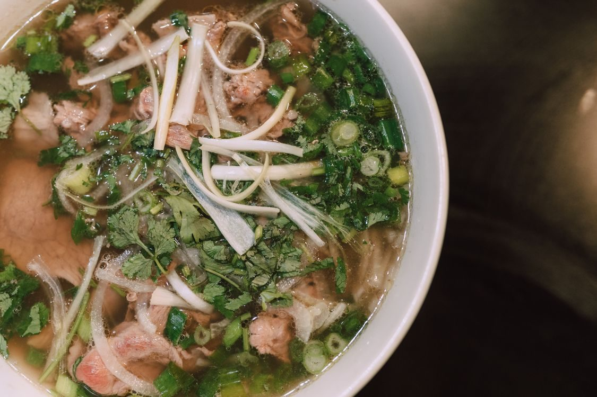
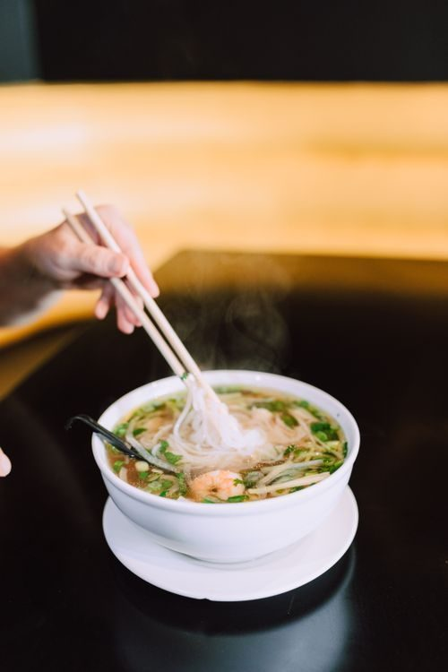

Take a look


A Vietnamese noodle restaurant in Ocean Springs. The menu centers on pho, including number 15 Pho Dac Biet and number 26 vegetable pho, plus banh mi, broken rice plates, spring rolls, tempura, and shakes. The food is described in research as fresh, healthy, and affordable. Cash only, with an ATM inside.


2941 Bienville Blvd, Ocean Springs, MS 39564
Open Sunday, 11 AM to 8 PM, and Monday to Saturday, 11 AM to 9 PM. Cash only, with an ATM inside.